РАСПРЕДВАЛ (для моделей без DPF) > СНЯТИЕ |
| 1. ОТСОЕДИНИТЕ ПРОВОД ОТ ОТРИЦАТЕЛЬНОГО ВЫВОДА АККУМУЛЯТОРНОЙ БАТАРЕИ |
| 2. СНИМИТЕ НИЖНЮЮ ОБЛИЦОВКУ ПЕРЕДНЕГО БАМПЕРА |
Освободите фиксатор, выверните 5 болтов и снимите нижнюю накладку переднего бампера.
| 3. СНИМИТЕ ЗАЩИТУ КАРТЕРА ДВИГАТЕЛЯ № 1 В СБОРЕ |
Выверните 4 болта и снимите защиту картера двигателя № 1.
| 4. СЛЕЙТЕ ОХЛАЖДАЮЩУЮ ЖИДКОСТЬ ДВИГАТЕЛЯ |
Ослабьте пробку сливного крана радиатора.
 |
Слейте охлаждающую жидкость, сняв пробку расширительного бачка, а затем с помощью ключа снимите вентиляционную пробку.
Ослабьте пробку сливного крана блока цилиндров.
| *1 | Бачок радиатора | *2 | Вентиляционная пробка |
| *3 | Пробка сливного крана радиатора | *4 | Пробка сливного крана блока цилиндров |
| 5. СНИМИТЕ ВЕНТИЛЯЦИОННУЮ РЕШЕТКУ В ВЕРХНЕЙ ЧАСТИ КОЖУХА В СБОРЕ |
Снимите вентиляционную решетку в верхней части кожуха (Нажмите здесь).
| 6. ОТСОЕДИНИТЕ ВХОДНОЙ ПАТРУБОК ОТОПИТЕЛЯ |
 |
Выверните болт и отсоедините входной патрубок отопителя.
| 7. ОТСОЕДИНИТЕ ВАКУУМНУЮ ТРУБКУ № 4 В СБОРЕ |
 |
Выверните болт и отсоедините вакуумную трубку № 4.
| 8. СНИМИТЕ ВПУСКНОЙ ПАТРУБОК № 1 |
 |
Отсоедините 3 разъема от датчика температуры воздуха на впуске, электродвигателя привода дроссельной заслонки и датчика абсолютного давления в коллекторе.
Снимите 2 зажима.
Отсоедините вакуумный шланг от датчика абсолютного давления в коллекторе.
 |
Ослабьте 2 зажима шланга и снимите воздушный шланг № 1.
 |
Ослабьте зажим воздушного шланга промежуточного охладителя.
 |
Выверните 2 болта и снимите впускной патрубок № 1.
| 9. СНИМИТЕ КОРПУС ДРОССЕЛЬНОЙ ЗАСЛОНКИ ДИЗЕЛЬНОГО ДВИГАТЕЛЯ В СБОРЕ (для моделей с системой РОГ) |
 |
Отсоедините разъем датчика положения дроссельной заслонки.
 |
Выверните 2 болта, отверните 2 гайки и снимите корпус дроссельной заслонки дизельного двигателя с прокладкой.
| 10. ОТСОЕДИНИТЕ ПЕРЕПУСКНОЙ ШЛАНГ ОХЛАЖДАЮЩЕЙ ЖИДКОСТИ № 3 (для моделей с системой РОГ с охладителем РОГ) |
| 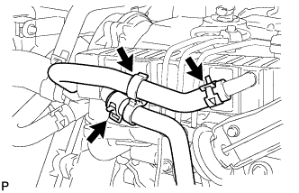 |
Снимите зажим.
Отсоедините перепускной шланг охлаждающей жидкости № 3 от охладителя РОГ.
| 11. ОТСОЕДИНИТЕ ПЕРЕПУСКНОЙ ШЛАНГ ОХЛАЖДАЮЩЕЙ ЖИДКОСТИ № 4 (для моделей с системой РОГ с охладителем РОГ) |
Отсоедините перепускной шланг охлаждающей жидкости № 4 от охладителя РОГ.
| 12. СНИМИТЕ ТОПЛИВНУЮ ТРУБКУ ВЫСОКОГО ДАВЛЕНИЯ (для моделей с системой РОГ) |
| 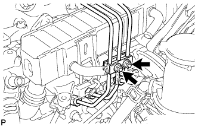 |
Отверните 2 гайки и снимите зажим топливной трубки высокого давления № 3.
 |
Выверните 2 болта и снимите 2 зажима топливной трубки высокого давления № 2.
 |
С помощью разрезной головки на 17 мм ослабьте гайки штуцеров и снимите топливные трубки высокого давления № 1, № 2 и № 3.
| *a | Со стороны форсунки |
| *b | Со стороны топливной системы Common Rail |
| 13. СНИМИТЕ ОПОРУ ПАТРУБКА ПОДАЧИ ВОЗДУХА |
 |
Выверните 3 болта и снимите опору патрубка подачи воздуха.
| 14. ОТСОЕДИНИТЕ ЖГУТ ЭЛЕКТРОПРОВОДКИ ДВИГАТЕЛЯ (для моделей с левосторонним рулевым управлением) |
 |
Выверните 2 болта.
Открепите зажим и отсоедините жгут электропроводки двигателя.
| 15. ОТСОЕДИНИТЕ ЖГУТ ЭЛЕКТРОПРОВОДКИ ДВИГАТЕЛЯ (для моделей с правосторонним рулевым управлением) |
 |
Выверните болт и отсоедините жгут электропроводки двигателя.
| 16. СНИМИТЕ КРОНШТЕЙН КЛАПАНА РОГ (для моделей с системой РОГ) |
Отверните 2 гайки и снимите кронштейн клапана РОГ.
| 17. СНИМИТЕ ЭЛЕКТРОННЫЙ КЛАПАН УПРАВЛЕНИЯ РАЗРЕЖЕНИЕМ В СБОРЕ (для моделей с системой РОГ) |
| 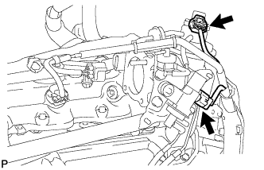 |
Отсоедините 2 разъема от электрического клапана управления РОГ и E-VRV.
 |
Освободите зажим жгута проводов.
 |
Отсоедините 5 вакуумных шлангов.
Выверните болт и снимите газовый фильтр вместе с кронштейном газового фильтра.
 |
Выверните 2 болта и снимите кронштейн E-VRV вместе с вакуумным демпфером РОГ.
| 18. СНИМИТЕ ПАТРУБОК ПОДАЧИ ВОЗДУХА № 2 (для моделей с системой РОГ) |
 |
Отверните 3 гайки и снимите патрубок подачи воздуха № 2 и прокладку.
| 19. СНИМИТЕ ПАТРУБОК ПОДАЧИ ВОЗДУХА (для моделей с системой РОГ) |
| 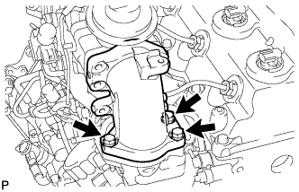 |
Выверните 3 болта и снимите патрубок подачи воздуха и 2 прокладки.
| 20. СНИМИТЕ ЭЛЕКТРИЧЕСКИЙ КЛАПАН УПРАВЛЕНИЯ РОГ В СБОРЕ С КЛАПАНОМ РОГ № 2 И ОХЛАДИТЕЛЕМ РОГ (для моделей с системой РОГ с охладителем РОГ) |
 |
Отсоедините вакуумный шланг № 3 от клапана РОГ № 2.
 |
Выверните болт, отверните 2 гайки и снимите электрический клапан управления РОГ вместе с клапаном РОГ № 2 и охладителем РОГ.
Снимите прокладку с блока цилиндров.
| 21. СНИМИТЕ ЭЛЕКТРИЧЕСКИЙ КЛАПАН УПРАВЛЕНИЯ РОГ ВМЕСТЕ С ТРУБОЙ РОГ № 1 В СБОРЕ (для моделей с системой РОГ без охладителя РОГ) |
 |
Отверните 2 гайки и снимите электрический клапан управления РОГ вместе с трубой РОГ № 1 и прокладкой.
| 22. СНИМИТЕ ЭЛЕКТРИЧЕСКИЙ КЛАПАН УПРАВЛЕНИЯ РОГ В СБОРЕ (для моделей с системой РОГ) |
| 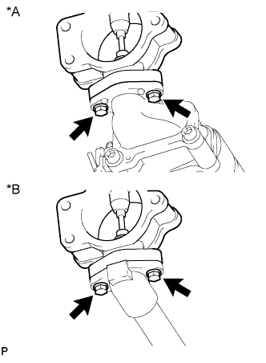 |
Выверните 2 болта и снимите электрический клапан управления РОГ и прокладку.
| *A | Для моделей с охладителем РОГ |
| *B | Для моделей без охладителя РОГ |
| 23. СНИМИТЕ ПЕРЕХОДНИК КЛАПАНА РОГ (для моделей с системой РОГ с охладителем РОГ) |
| 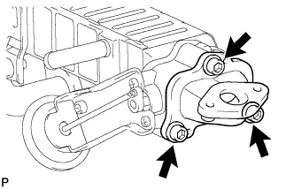 |
С помощью шестигранного ключа на 6 мм выверните 3 болта с шестигранными головками и снимите 3 плоских шайбы, переходник клапана РОГ и прокладку.
| 24. СНИМИТЕ КЛАПАН РОГ № 2 В СБОРЕ (для моделей с системой РОГ с охладителем РОГ) |
 |
С помощью шестигранного ключа на 5 мм выверните болт с шестигранной головкой и снимите клапан РОГ № 2 и прокладку.
| 25. СНИМИТЕ КРОНШТЕЙН КОРПУСА ДРОССЕЛЬНОЙ ЗАСЛОНКИ (для моделей без системы РОГ) |
| 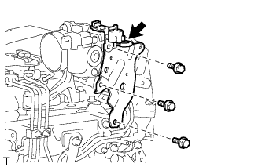 |
Отсоедините вакуумный шланг.
Выверните болт и снимите газовый фильтр с кронштейном газового фильтра.
Выверните 2 болта и снимите кронштейн корпуса дроссельной заслонки.
| 26. СНИМИТЕ ТОПЛИВНУЮ ТРУБКУ ВЫСОКОГО ДАВЛЕНИЯ (для моделей без системы РОГ) |
| 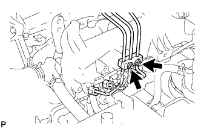 |
Отверните 2 гайки и снимите зажим топливной трубки высокого давления № 3.
 |
Выверните 2 болта и снимите 2 зажима топливной трубки высокого давления № 2.
 |
С помощью разрезной головки на 17 мм ослабьте гайки штуцеров и снимите топливные трубки высокого давления № 1, № 2 и № 3.
| *a | Со стороны форсунки |
| *b | Со стороны топливной системы Common Rail |
| 27. СНИМИТЕ ОПОРУ ПАТРУБКА ПОДАЧИ ВОЗДУХА (для моделей без системы РОГ) |
 |
Выверните 3 болта и снимите опору патрубка подачи воздуха.
| 28. ОТСОЕДИНИТЕ ЖГУТ ЭЛЕКТРОПРОВОДКИ ДВИГАТЕЛЯ (для моделей без системы РОГ) |
 |
Для моделей с левосторонним рулевым управлением:
Выверните 2 болта и отсоедините зажим и жгут электропроводки двигателя.
 |
Для моделей с правосторонним рулевым управлением:
Выверните болт и отсоедините жгут электропроводки двигателя.
| 29. СНИМИТЕ ПАТРУБОК ПОДАЧИ ВОЗДУХА С КОРПУСОМ ДРОССЕЛЬНОЙ ЗАСЛОНКИ ДИЗЕЛЬНОГО ДВИГАТЕЛЯ В СБОРЕ (для моделей без системы РОГ) |
 |
Отсоедините разъем датчика положения дроссельной заслонки.
 |
Выверните 3 болта и снимите патрубок подачи воздуха с дроссельной заслонкой дизельного двигателя и прокладку.
| 30. СНИМИТЕ ОПОРУ КОЛЛЕКТОРА С ЭЛЕКТРОВАКУУМНЫМ КЛАПАНОМ |
Отсоедините разъем электровакуумного клапана.
 |
Для моделей без системы РОГ:
Отсоедините разъем.
| 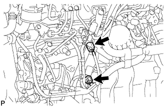 |
Для моделей с системой РОГ без охладителя РОГ:
Отсоедините 2 разъема.
 |
Для моделей с системой РОГ с охладителем РОГ:
Отсоедините 3 разъема.
 |
Отсоедините вакуумный шланг № 1.
 |
Для моделей с системой РОГ:
Отсоедините вакуумные шланги № 2 и № 3.
 |
Для моделей с охладителем РОГ:
Отсоедините вакуумный шланг № 3.
| 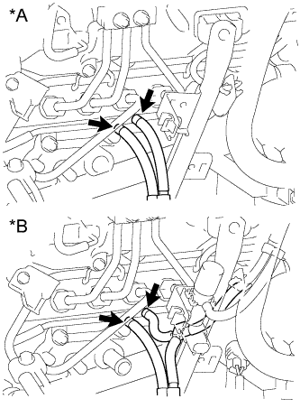 |
Отсоедините вакуумные шланги № 3 и № 4.
| *A | Для моделей без системы РОГ |
| *B | Для моделей с системой РОГ |
| 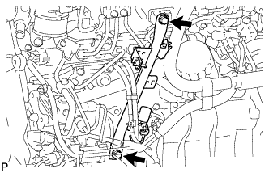 |
Выверните 2 болта и снимите опору коллектора с электровакуумным клапаном.
| 31. СНИМИТЕ ТОПЛИВНУЮ ТРУБКУ ВЫСОКОГО ДАВЛЕНИЯ № 4 |
| 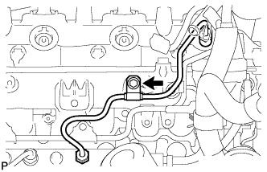 |
Выверните болт и отсоедините зажим топливной трубки высокого давления.
| 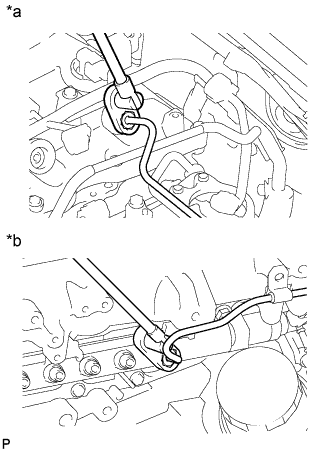 |
С помощью разрезной головки на 17 мм ослабьте гайки штуцеров и снимите топливную трубку высокого давления № 4.
| *a | Со стороны форсунки |
| *b | Со стороны топливной системы Common Rail |
| 32. СНИМИТЕ ТРУБОПРОВОД ОБРАТНОГО СЛИВА ТОПЛИВА № 2 |
 |
Отсоедините 3 шланга подачи топлива.
Выверните пустотелый соединительный болт-штуцер, 4 болта и снимите трубопровод обратного слива топлива № 2 и прокладку.
| *1 | Пустотелый соединительный болт-штуцер |
| 33. СНИМИТЕ ЖГУТ ПРОВОДОВ |
| 34. СНИМИТЕ КРЫШКУ ГОЛОВКИ БЛОКА ЦИЛИНДРОВ № 2 В СБОРЕ |
 |
Выверните 4 болта и снимите крышку головки блока цилиндров № 2.
| 35. СНИМИТЕ ТРУБКУ ВЕНТИЛЯЦИИ КАРТЕРА |
| 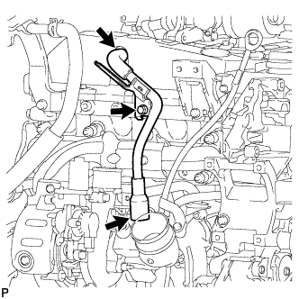 |
Выверните болт и отсоедините 2 шланга вентиляции картера и трубку вентиляции картера.
| 36. СНИМИТЕ УПЛОТНИТЕЛЬНОЕ КОЛЬЦО ФОРСУНКИ В ГОЛОВКЕ БЛОКА ЦИЛИНДРОВ |
 |
С помощью небольшой отвертки снимите 4 уплотнительных кольца, поддев часть между каждым уплотнительным кольцом и вырезом крышки головки блока цилиндров.
| 37. СНИМИТЕ КРЫШКУ ГОЛОВКИ БЛОКА ЦИЛИНДРОВ В СБОРЕ |
 |
Выверните 10 болтов, отверните 2 гайки и снимите крышку головки блока цилиндров и прокладку.
| 38. СНИМИТЕ ФОРСУНКУ В СБОРЕ |
 |
Выверните пустотелый соединительный болт-штуцер, 4 полых винта форсунок и снимите 5 прокладок и трубопровод обратного слива топлива.
| *1 | Пустотелый соединительный болт-штуцер |
 |
Выверните 4 болта и снимите 4 шайбы, 4 фиксатора корпуса форсунок № 1 и 4 форсунки.
Снимите кольцевое уплотнение с каждой форсунки.
Снимите 4 седла форсунок с головки блока цилиндров.
| 39. СНИМИТЕ ПАТРУБОК РАДИАТОРА № 1 |
| 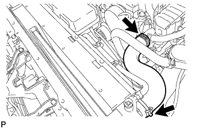 |
| 40. СНИМИТЕ КОЖУХ ВЕНТИЛЯТОРА |
 |
Отсоедините перепускной шланг охлаждающей жидкости № 1, отсоедините 2 зажима от кожуха вентилятора.
Отсоедините перепускной шланг охлаждающей жидкости № 2 от расширительного бачка радиатора.
Выверните 3 болта и снимите расширительный бачок радиатора.
Для моделей с автоматической трансмиссией:
Отсоедините впускной и выпускной патрубки масляного радиатора и открепите зажим от кожуха вентилятора.
 |
Отсоедините от радиатора 2 патрубка масляного радиатора.
| 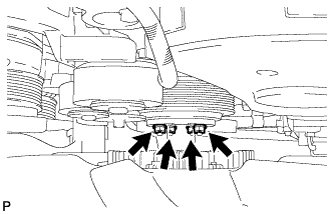 |
Ослабьте 4 гайки, крепящие вискомуфту и вентилятор.
Снимите поликлиновой ремень вентилятора и генератора (Нажмите здесь).
 |
Выверните 2 болта, крепящие кожух вентилятора.
Отверните 4 гайки вентилятора с вискомуфтой, а затем снимите кожух вместе с вентилятором вискомуфты.
Отсоедините перепускной шланг охлаждающей жидкости № 2 от зажима шланга на кожухе вентилятора.
 |
Отсоедините перепускной шланг охлаждающей жидкости № 2 от впускного патрубка охлаждающей жидкости.
Снимите шкив вентилятора с насоса системы охлаждения.
| 41. СНИМИТЕ КРЫШКУ РЕМНЯ ГАЗОРАСПРЕДЕЛЕНИЯ № 1 |
| 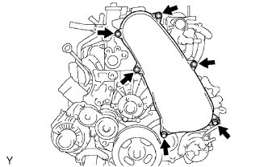 |
Выверните 6 болтов и снимите 6 шайб и крышку ремня газораспределения.
| 42. СНИМИТЕ ПРИВОДНОЙ РЕМЕНЬ ГАЗОРАСПРЕДЕЛЕНИЯ |
 |
Поверните коленчатый вал по часовой стрелке и совместите установочные метки, как показано на рисунке.
| *1 | Установочная метка |
| 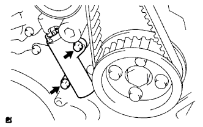 |
Равномерно ослабьте и выверните 2 болта натяжителя приводного ремня газораспределения № 1.
Снимите приводной ремень газораспределения.
 |
| 43. СНИМИТЕ ОПОРНЫЙ РОЛИК ПРИВОДНОГО РЕМНЯ ГАЗОРАСПРЕДЕЛЕНИЯ № 1 В СБОРЕ |
С помощью шестигранного ключа на 10 мм выверните болт и снимите опорный ролик приводного ремня газораспределения № 1 и шайбу.
| 44. СНИМИТЕ ЗУБЧАТОЕ КОЛЕСО РАСПРЕДВАЛА |
 |
Выверните болт зубчатого колеса распредвала, удерживая распредвал ключом.
Снимите зубчатое колесо распредвала.
| 45. СНИМИТЕ КРЫШКУ РЕМНЯ ГАЗОРАСПРЕДЕЛЕНИЯ № 2 |
 |
Выверните 4 болта, отверните гайку и снимите крышку ремня газораспределения № 2.
| 46. СНИМИТЕ РАСПРЕДВАЛ |
| 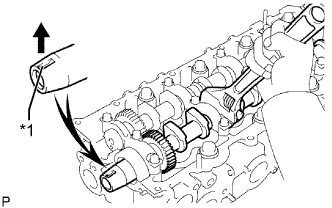 |
Поверните распредвал с помощью ключа таким образом, чтобы шпоночная канавка распредвала была направлена вверх.
| *1 | Шпоночная канавка |
 |
В несколько приемов равномерно ослабьте 15 болтов крышек подшипников в последовательности, показанной на рисунке.
Выверните 15 болтов крышек подшипников и снимите 5 крышек подшипников, сальник и 2 распредвала.